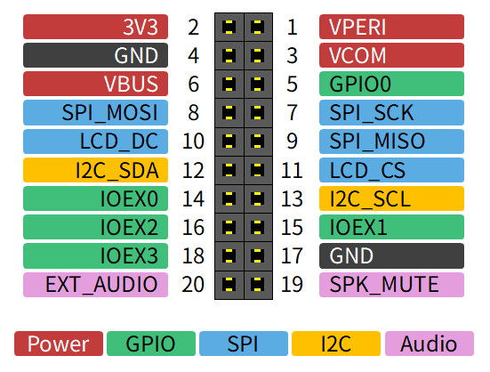

ハードウェア仕様
基本仕様
項目 |
値 |
|---|---|
基板外形 |
100x50mm |
MCU ボード |
Seeed Studio XIAO RP2350 または XIAO ESP32S3 |
ディスプレイ |
1.54インチ 240x240px IPS 液晶 (ST7789) |
スピーカー |
ダイナミックスピーカー |
キーパッド |
タクトスイッチまたはゴム接点 |
バッテリー(別売) |
DTP502535 (3.7V 400mAh) |
メモリーカード(別売) |
SPIモード専用 |
拡張ポート |
20pin ピンソケット (I2C、SPI、GPIOx5、オーディオ) |
消費電力 (RP2350) |
約 400mW (100mA @ 4V) |
消費電力 (ESP32S3) |
約 500mW (120mA @ 4V) |
待機電流 (RP2350) |
約 80μA |
待機電流 (ESP32S3) |
約 20μA |
回路図
電源
VBUS
XIAO から供給される 5V の電源です。 USB ケーブルが接続されていれば XIAO の MCU の状態に関わらず常に供給されます。
VBAT
バッテリーから供給される電源です。 バッテリーが接続されていれば XIAO の MCU の状態に関わらず常に供給されます。
3V3
XIAO に内蔵された DC/DC コンバータによって生成される 3.3V の電源です。 USB ケーブルまたはバッテリーが接続されていれば、XIAO の MCU の状態に関わらず常に供給されます。
VPERI
VPERI はペリフェラルに供給される 3.3V の電源です。 次の条件が両方満たされると供給されます。
IO エキスパンダの PERI_EN_N が Low であること
ディスプレイの CS と DC が少なくとも短時間 High であること
ディスプレイの CS と DC が長時間 Low またはハイインピーダンスになると、 PERI_EN_N が Low であっても VPERI の供給は停止します。 これにより XIAO のブートローダーが起動している間はペリフェラルの電源供給が停止します。
VCOM
VCOM は VBUS (5V) と VBAT (バッテリー電圧) のうち高い方が供給されます。 VPERI とは無関係に供給されます。
VANL
VANL はオーディオ回路の供給される 3.3V の電源で、VCOM からシリーズレギュレータによって生成されます。 シリーズレギュレータのイネーブルは VPERI と連動します。
ペリフェラル
電源スイッチ
信号名 |
ピン (RP2350) |
ピン (ESP32S3) |
|---|---|---|
POWER |
GPIO 27 |
GPIO 2 |
電源スイッチは遅延回路を介して XIAO のリセット端子にも接続されており、 長押しすることによってリセットすることができます。
ディスプレイ
信号名 |
ピン (RP2350) |
ピン (ESP32S3) |
|---|---|---|
SCK |
GPIO 2 |
GPIO 7 |
MOSI |
GPIO 3 |
GPIO 9 |
DC |
GPIO 28 |
GPIO 3 |
CS |
GPIO 5 |
GPIO 4 |
リセット端子は IO エキスパンダの PORTA の 5 番に接続されています。
ディスプレイの電源は VPERI によって供給されます。
メモリーカード
信号名 |
ピン (RP2350) |
ピン (ESP32S3) |
|---|---|---|
SCK |
GPIO 2 |
GPIO 7 |
MOSI |
GPIO 3 |
GPIO 9 |
MISO |
GPIO 4 |
GPIO 8 |
CS |
GPIO 0 |
GPIO 43 |
CS ピンを Low にドライブするとアクセスランプが点灯します。
メモリーカードの電源は VPERI によって供給されます。
オーディオ
信号名 |
ピン (RP2350) |
ピン (ESP32S3) |
|---|---|---|
AUDIO_OUT |
GPIO 1 |
GPIO 44 |
オーディオ出力はバッファ、ローパスフィルタ、ボリュームを介してパワーアンプに接続されます。 XIAO からの出力は PDM または PWM を想定しています。 パワーアンプのミュート端子は IO エキスパンダのポート A の 6 番に接続されています。
GPIO
信号名 |
ピン (RP2350) |
ピン (ESP32S3) |
|---|---|---|
GPIO_0 |
GPIO 26 |
GPIO 1 |
GPIO 端子は拡張ポートに接続されています。
IO エキスパンダ
デバイス: PCA9555
型番 |
デバイスアドレス |
|---|---|
PCA9555 |
0x22 |
信号名 |
ピン (RP2350) |
ピン (ESP32S3) |
|---|---|---|
SDA |
GPIO 6 |
GPIO 5 |
SCL |
GPIO 7 |
GPIO 6 |
信号名 |
接続先 |
極性 |
|---|---|---|
PORTA-0 |
拡張ポート IOEX0 |
ユーザー定義 |
PORTA-1 |
拡張ポート IOEX1 |
ユーザー定義 |
PORTA-2 |
拡張ポート IOEX2 |
ユーザー定義 |
PORTA-3 |
拡張ポート IOEX3 |
ユーザー定義 |
PORTA-4 |
ペリフェラルイネーブル (PERI_EN_N) |
Low アクティブ |
PORTA-5 |
ディスプレイリセット |
Low アクティブ |
PORTA-6 |
オーディオミュート |
Low アクティブ |
PORTA-7 |
ファンクションスイッチ |
Low アクティブ |
PORTB-0 |
A ボタン |
Low アクティブ |
PORTB-1 |
B ボタン |
Low アクティブ |
PORTB-2 |
Y ボタン |
Low アクティブ |
PORTB-3 |
X ボタン |
Low アクティブ |
PORTB-4 |
↑ボタン |
Low アクティブ |
PORTB-5 |
↓ボタン |
Low アクティブ |
PORTB-6 |
←ボタン |
Low アクティブ |
PORTB-7 |
→ボタン |
Low アクティブ |
バッテリー監視用 ADC
型番 |
デバイスアドレス |
|---|---|
ADC101C027 |
0x52 |
信号名 |
ピン (RP2350) |
ピン (ESP32S3) |
|---|---|---|
SDA |
GPIO 6 |
GPIO 5 |
SCL |
GPIO 7 |
GPIO 6 |
ADC の電源は VPERI によって供給されます。
拡張ポート
拡張ポートは基板の背面にあります。XIAO に近い側が 1 番ピンです。

EXT_AUDIO はオーディオ回路から分岐した信号で、XIAO からのオーディオ出力を外部へ出力したり、 逆に外部からのオーディオ信号を入力して XIAO の出力とミックスしてスピーカーから出力できます。
SPK_MUTE はパワーアンプのミュート端子に接続されており、 High にドライブすることでXiamocon 本体のスピーカーをミュートできます。
GPIO0 と IOEX0-3 の用途はアプリ側で自由に定義できます。